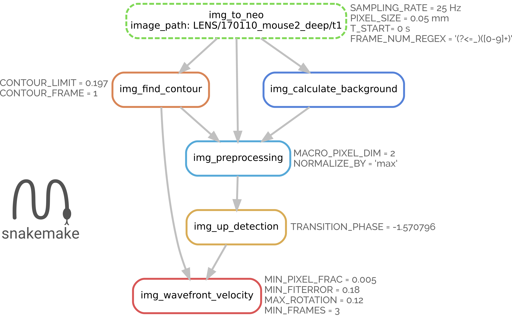
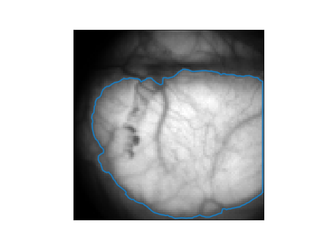
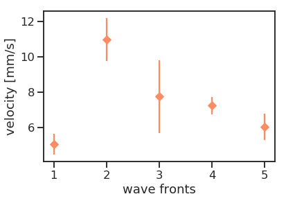

Building a workflow for the analysis of slow wave activity across heterogeneous measurement
Robin Gutzen, Sonja Grün, Michael Denker,
Guila de Bonis, Elena Pastorelli, Cristiano Capone, Pier Stanislao Paolucci
Institute of Neuroscience and Medicine (INM-6), Research Center Jülich, Germany
APE lab, Istituto Nazionale di Fisica Nucleare Rome, Italy
26.09.2019 | SP3-based meeting, Liège
Slow cortical waves
- Frequency range: 0.5 - 4 Hz
- Occurs during anesthesia and sleep
- Linked to memory consolidation
- Observable in various species and with various measurements
The Collaboration of Use Case SGA2-SP3-UC002
aka WaveScalEphant
- Data
Anesthetized mice
Calcium Imaging (Ketamin) *
ECoG (Isoflurane) **
DPSNN simulation data
Nest simulation data - Model
WaveScalES spiking model
24x24 modules á 1250 neurons
- Analysis
Pipelines for optical and elect. signals
as Python and Matlab scripts
* F.S. Pavone Lab, LENS, Florence, Italy
** M.V. Sanchez-Vives Lab, IDIBABS, Barcelona, Spain
- Methods & Validation
Transfer and further development; Comparison of methods;
Validation testing of spatially organized data - Implementation
of data structures & metadata;
of analysis tools - Workflows
For integrating data analyses
and model calibration/validation
Why reimplement? What is the added value?
We want to get from custom code to general, reusable, curated code and make it available!
Workflow aspects
- Standard representation of data
- Metadata enrichment
- Standard algorithms and implementations
- Modular, adaptable analysis steps
- Provenance and explicit parameters settings
- Generalization of analysis steps
Added value
- Findability on neuroinformatics platform
- Accessibility of data, results, and workflow
- Interoperable link of data, metadata, and results
- Reusablity of generic workflow components for analysis
- Extension across scales!
- Relate standardized features across datasets
Open-source tools (Python)
Data structure to represent electrophysiology data and metadata.
Supports a range of file formats. Used by various software.
Tool to analyse spike data and neuronal times series data (e.g. LFP)
Workflow management tool for reproducible and scalable analyses.

Modular framework for validating models on the level of the network activity.
Reminder: simulator comparison (validation)
The choice of the simulator influences a model's network activity.


Not only models need to be validated, also simulators!
The workflow


Analysis steps in the optical branch
Analysis steps in the optical branch
Raw images
ROI & Background
Preprocessed images
Detect UP-transitions
Select wavefronts
Wave velocities
Outlook
Functionalites
- Implementation of characteristic wave measures
- Parallel evaluation of imaging and ECoG data (+EEG)
- Validation of WaveScalEs model
Scientific questions & applications
- Waves in different cortical areas.
- Correlations to behavior & brain state.
Thank you!